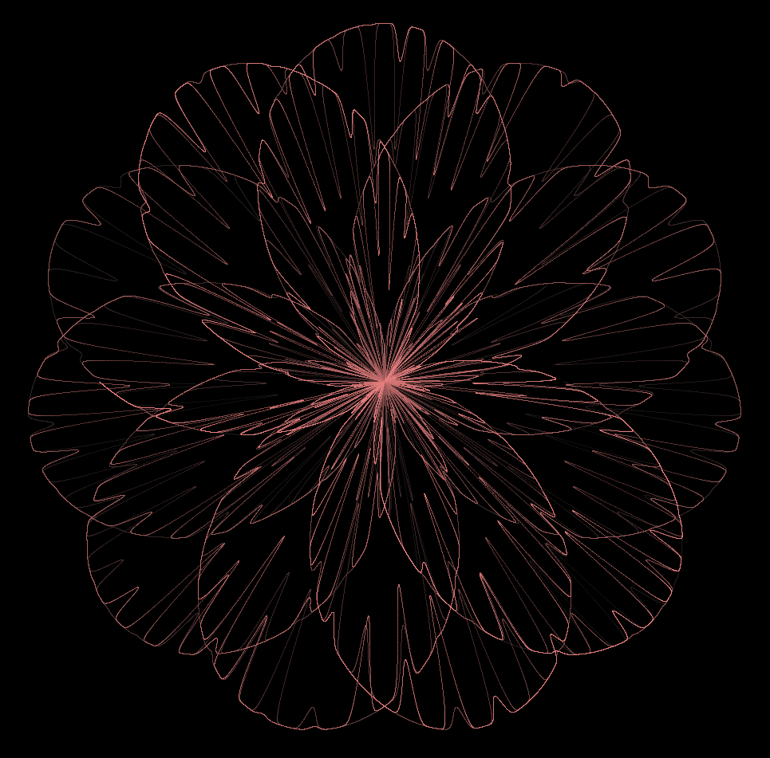

The chrysanthemum curve is obtained in polar coordinates by the equation for \( r \), the radius (this being the length from the origin), and cartesian coordinates are obtained with the standard trigonometric functions as shown alongside the other equation. The curve is interesting in that it replicates a structure of nature quite well using only the two trigonometric functions sine and cosine, and the curve is pretty too. Now, \( r \) is given as follows:
$$ r = 5 ~ \left( 1 + sin \left( \frac{11 u}{5} \right) \right) - 4 sin^4 \left( \frac{17 u}{3} \right) ~ sin^8(2 cos(3 u ) - 28 u) $$where \( u \) is the angle and obeys the conditions:
$$ 0 \le u \le 21 \pi $$and \( x \) and \( y \) are given by:
$$ x = r ~ cos(u) $$ $$ y = r ~ sin(u) $$Below are given a couple of examples of chrysanthemum curves programmed with a step size of \( \frac{\pi}{n} \) in the angle where \( n = 30000 \).
Figure 1: Perfect Chrysanthemum Curve
The Processing (Java) code for the curve in figure 1:
int s = 45;
void setup() {
size(1200, 1000);
stroke(255, 255, 255, 150);
}
void draw() {
background(0);
int red = 20;
int green = 20;
int blue = 20;
int n = 0;
translate(width/2, height/2);
for (float u = 0; u < 21 * PI; u += PI/30000) {
float r = 5 * (1 + sin(11 * u/5)) - 4 *
pow(sin(17 * u/3), 4) *
pow(sin(2 * cos(3 * u) - 28 * u), 8);
float x = s * r * cos(u);
float y = s * r * sin(u);
if (n % 30000 == 0) {
red += 10;
green += 5;
blue += 5;
}
stroke(red, green, blue, 150);
point(x, y);
n++;
}
}
Figure 2: Skewed Chrysanthemum Curve